Hi, I'm Jakob
Harvested
Each chapter downloaded and merged into a single XHTML document
Next the document was transformed into Rhinestone XML, and uploaded
Thankfully, norwegian legislation is very similar to danish.
Proposisjon
=
Lovforslag som fremsat
At the end of the proposisjon
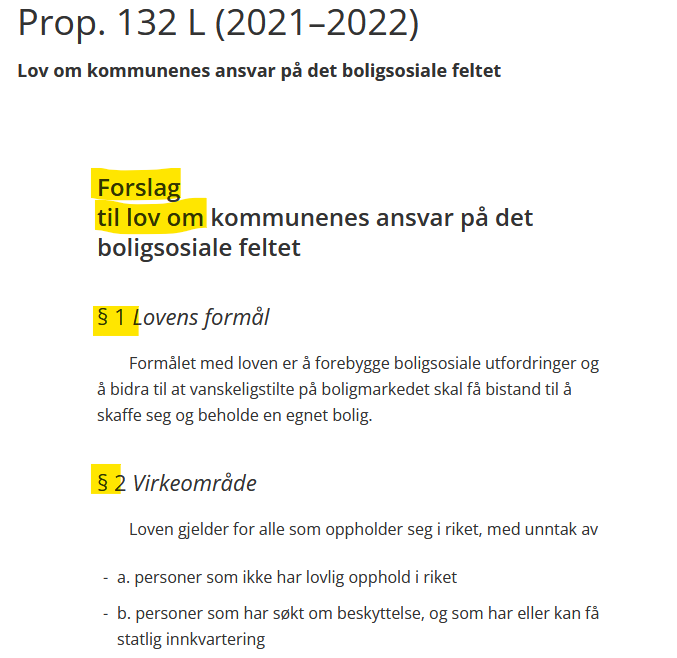Lovforslag
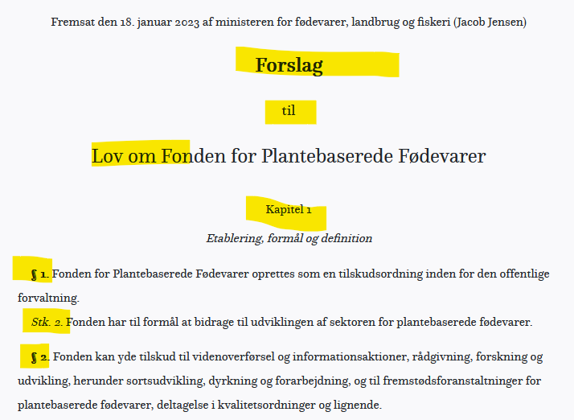Bakgrunnen for lovforslaget, etc.
=
Almindelige bemærkninger
Bakgrunnen for lovforslaget, etc.
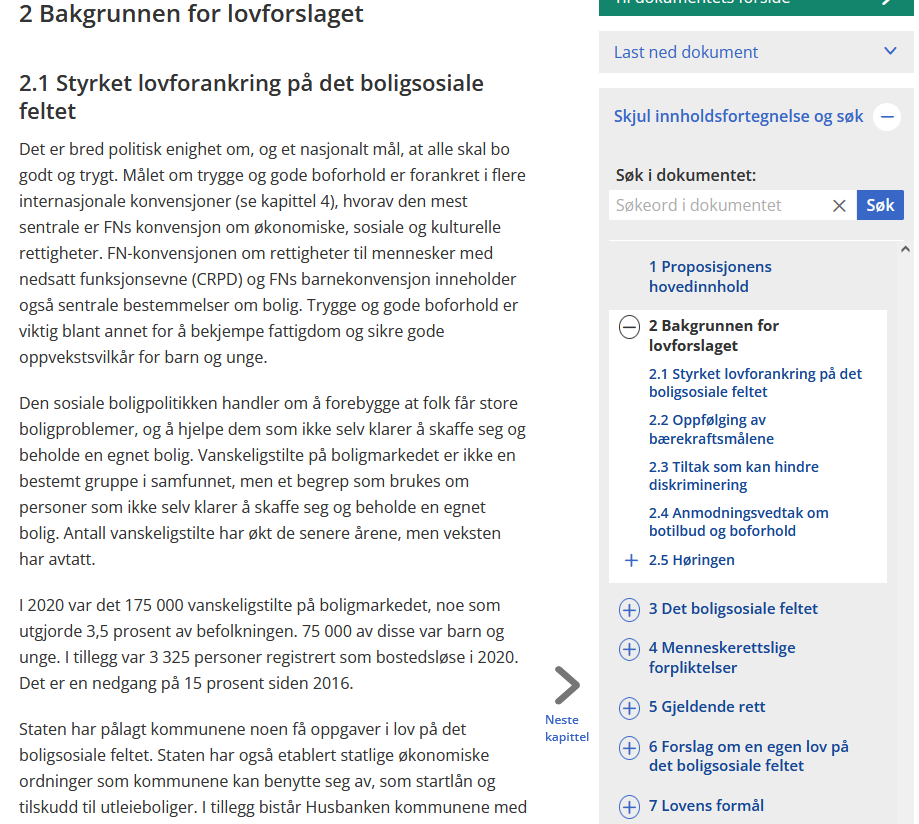Almindelige bemærkninger
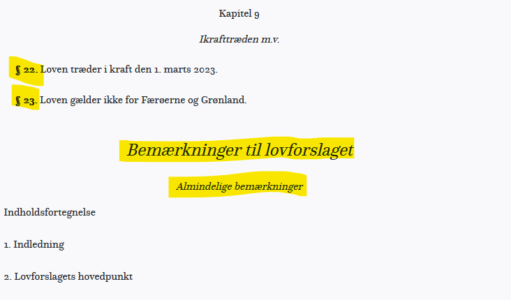Merknader til de enkelte bestemmelser
=
Bemærkninger til de enkelte bestemmelser
Merknader til de enkelte bestemmelser
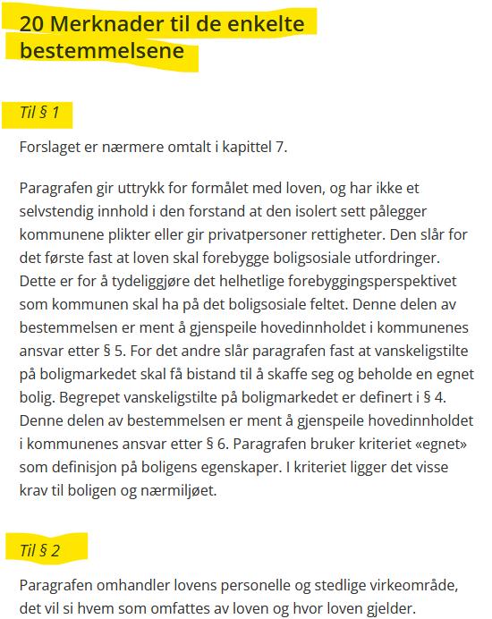Bemærkninger til de enkelte bestemmelser
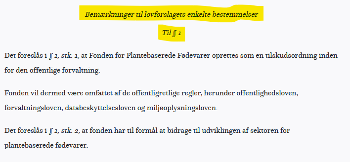So we ended up with a document structure like this
...
20 Merknader til de enkelte bestemmelsene
Til § 1
Forslaget er nærmere omtalt i kapittel 7.
Paragrafen gir uttrykk for formålet med loven, ...
...
...
Lastly, relations between the documents was added
Case: Enabling §-zoom in Schultz Legal Research
Better semantics enables new possibilities.
E.g. Schultz §-zoom is all about better semantics
Align documents in various content models (i.e. schemas)
Why?
We want to progress iteratively
by safely enhancing structure
and eliminating known errors,
without introducing new errors.
a paragraf must contain one or more ledd
a proposisjon must have the following kapitler
§ 4 follows § 3
Logical ids for a paragraf in a lov is composed of
E.g. tvisteloven § 18-3, kunngjort 17/6 2005
will become L2005061790.§18-3
id-references inside the document should have a target id
i.e. href="#p3" should have a id="p3"
The pull-request contains
All errors were given types, so we could aggregate errors by type
... and focus our efforts on error types
Trying to solve all problems in a single document
is not that productive
i.e. for input and output document
... and save as part of pull-request
Example ...
Output of one step, is input of the next, ...
Why?
It's hard to solve complex tasks
Instead, solve simple tasks,
task by task,
making it increasingly easier
to solve the complex task
.. thus, each step is a XSLT transform, that
Generate links from a Merknader section to paragraf sections
Mark up paragraf-references
<section>
<h1>Til § 4-9 og 12</h1>
</section>
... as
<section>
<h1>Til § <a href="#p4">4</a>-<a href="#p9">9</a> og <a href="#p12">12</a></h1>
</section>
Collect
<section data-remarks="#p4-#p9 #p12">
<h1>Til § <a href="#p4">4</a>-<a href="#p9">9</a> og <a href="#p12">12</a></h1>
</section>
Expand ranges
<section data-remarks="#p4 #p5 #p6 #p7 #p8 #p9 #p12">
<h1>Til § <a href="#p4">4</a>-<a href="#p9">9</a> og <a href="#p12">12</a></h1>
</section>
Cleanup
<section data-remarks="#p4 #p5 #p6 #p7 #p8 #p9 #p12">
<h1>Til § 4-9 og 12</h1>
</section>
are quite useful for explorative analysis.
They let you search across all your documents
using XPath
Indexing documents is easy
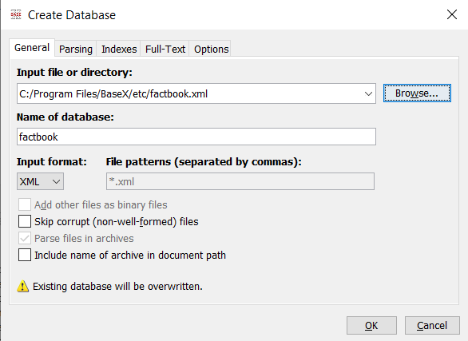... and happy customers 😄
the XML format of Fundament
section backported from HTML5scriptiframeformsonclick=In fact we defined it as a subset of XHTML (HTML4) using RelaxNG
default namespace = "http://www.w3.org/1999/xhtml"
include "../www.w3.org/xhtml11/rnc/modules/datatypes.rnc"
include "../www.w3.org/xhtml11/rnc/modules/attribs.rnc"
include "modules/html5backports.rnc"
include "../www.w3.org/xhtml11/rnc/modules/struct.rnc" {
html = element html { html.attlist, article }
}
include "../www.w3.org/xhtml11/rnc/modules/text.rnc" {
blockquote.attlist &= attribute data-ends-with { text }?
}
include "../www.w3.org/xhtml11/rnc/modules/hypertext.rnc"
include "modules/hypertext.rnc"
include "../www.w3.org/xhtml11/rnc/modules/list.rnc"
include "../www.w3.org/xhtml11/rnc/modules/image.rnc"
include "../www.w3.org/xhtml11/rnc/modules/pres.rnc"
include "../www.w3.org/xhtml11/rnc/modules/edit.rnc"
include "../www.w3.org/xhtml11/rnc/modules/table.rnc"
include "../www.w3.org/xhtml11/rnc/modules/inlstyle.rnc"
include "../www.w3.org/xhtml11/rnc/modules/legacy.rnc"
include "modules/note.rnc"
Here's the parts we had to add ourselves (inspired by HTML5)
section = element section { section.attlist, Flow.model }
section.attlist = CommonIdRequired.attrib
Block.class |= section
article = element article { article.attlist, header, Flow.model }
article.attlist = Common.attrib
header = element header { header.attlist, Flow.model }
header.attlist = Common.attrib
sectionsIt defines sections of the document
and we use it to generate the table of contents
If the section can be referred to, i.e. has an id
it should have a title, i.e. h1
§ 1
For det første ...
Stk. 2
For det andet ...
Stk. 3
For det tredje ...
It is essentially just XHTML
Therefore it limits the expressiveness of the XML
Compare
§ 1
For det første ...
Stk. 2
For det andet ...
Stk. 3
For det tredje ...
... to
For det første ...
For det andet ...
For det tredje ...
The latter example is data without presentation
...
For det første ...
Stk. 2
For det andet ...
...
... and Stk. 2 should be added on rendering
And it is not possible to express constraints on section/@class
start = element paragraf {
attribute id { xsd:ID },
element stk { text }+
}
... remember?
But we can express constraints on section/@class in Schematron
Section with class 'stk' must be a child of a section with class 'paragraf'
Our history is that, we had many different formats for the same type of content, e.g. forslag
Large variations in semantics and strictness
Rhinestone XML was considered a common ground
Rhinestone XML is a great publication format
But we have initiatives towards support for other content models in the management part of Fundament
XML is not just a data format
it's a Markup Language
Marking up content - analouge
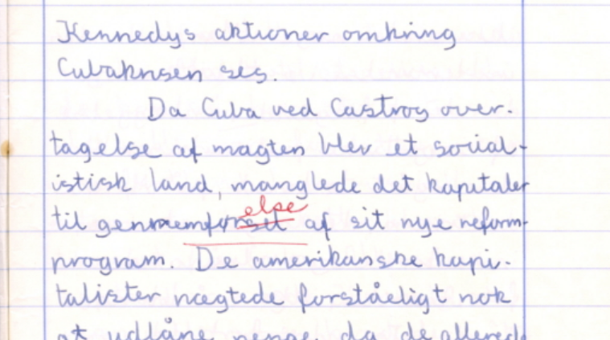and digitally
XML is eXtensible
We can define tree-like data structures, schemas
Schemas are strict, just like a table schema in SQL
but they still allow flexibility we need to express natural language, e.g.
CO2 er en drivhusgas
Schemas are declarative
We (only) need to specify how a document must be structured.
Example: A paragraf have one or more stykker
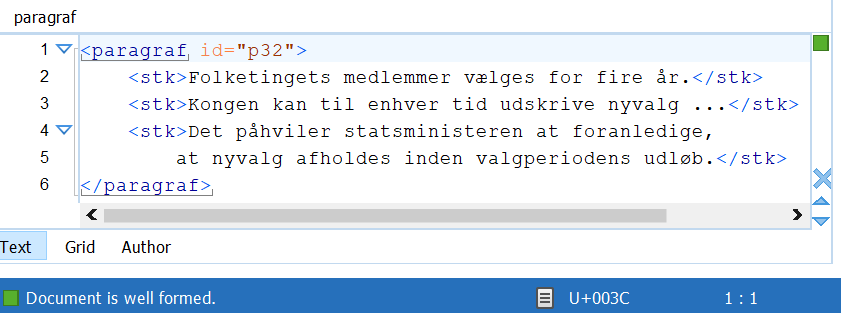Hence, the structure
start = element paragraf {
attribute id { xsd:ID },
element stk { text }+
}
Consequently, the following is invalid
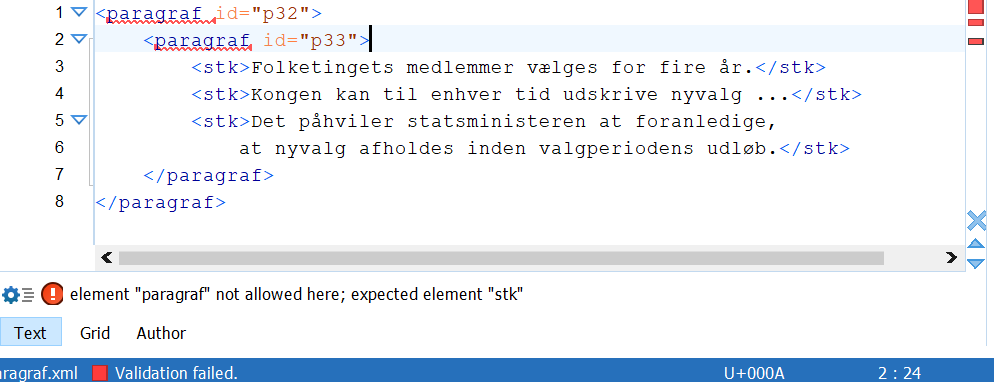XML editors understand schemas
and can help you write valid documents
Hence strict schemas are a valuable tool for editors
Also, it's easier to avoid introducing errors, than to find and correct them later on
Valid strictly structured documents means:
But schemas cannot express all kind of constraints
Example: § 4 should follow § 3
Schematron is a rule-based language
based on XPath
Every rule has a context
...
and an assertion
A paragraf must have at least one stk
We can also define variables
Back to the example:
§ 4 should follow § 3§ 4 should follow § 3
Example
Replacing ae with æ in id's
It's not an error, so we just report it
But we can also suggest a fix for it
Schematron quick fixes
First of all...
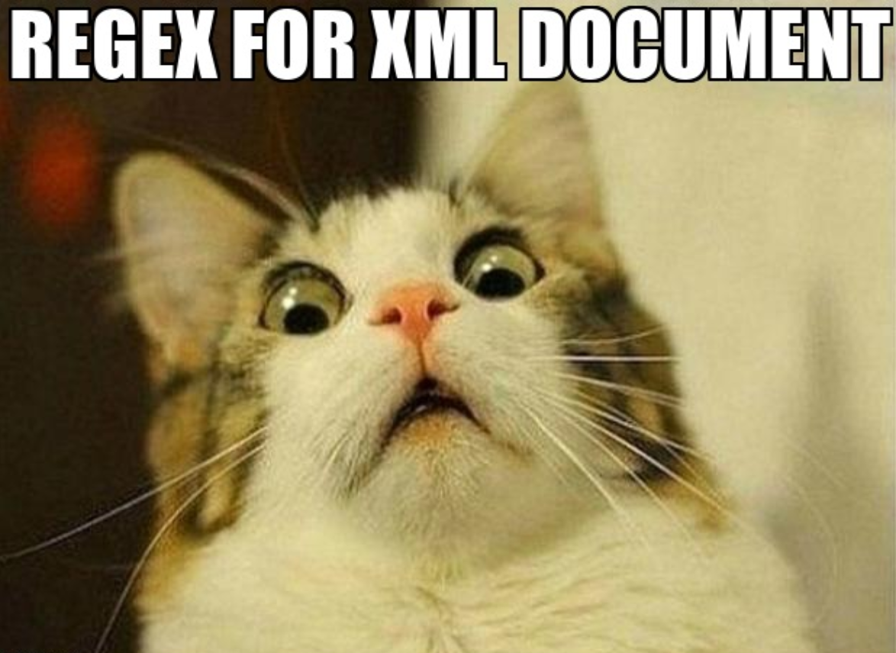We only write what we want, not how to get it.
i.e. in this context return this.
The XSLT processor takes care of the rest.
No side-effects, i.e. no state
Processors are available for most languages
... even browsers
It's made exactly for the purpose, transforming XML to XML,
... or HTML5, or JSON, or plain text, ...
XSLT and XPath are W3 standards
and industry standards
- you will be standing on the shoulders of experts
You like to be able to use regular expressions, don't you?
<Index>
<Indentatio>First</Indentatio>
<Indentatio>Next</Indentatio>
<Indentatio>Third</Indentatio>
</Index>
<xsl:template match="Index">
<ol>
<xsl:for-each select="Indentatio">
<li>
<xsl:value-of select="."/>
</li>
</xsl:for-each>
</ol>
</xsl:template>
<xsl:template match="Index">
<ol>
<xsl:apply-templates/>
</ol>
</xsl:template>
<xsl:template match="Indentatio">
<li>
<xsl:apply-templates/>
</li>
</xsl:template>
<Index>
<Indentatio>- This</Indentatio>
<Indentatio>- And that</Indentatio>
</Index>
Thus, among ...
<xsl:template match="Index">
<ol>
<xsl:apply-templates/>
</ol>
</xsl:template>
<xsl:template match="Index[starts-with(Indentatio, '-')]">
<ul>
<xsl:apply-templates/>
</ul>
</xsl:template>
The processor will pick the latter template
Unit testing for XSLT
Lets build a test for deduplicate-ids.xslt
and name it deduplicate-ids.xspec
Running it
Duplicate ids
FAILED
Formatting Report...
passed: 0 / pending: 0 / failed: 1 / total: 1
Report available at xspec/xspec/deduplicate-ids-result.html
Done.
i.e. types of stylesheets you can write
Example: HTML-rendering of LexDania
<xsl:template match="Rubrica">
<h1>
<xsl:apply-templates/>
</h1>
</xsl:template>
<xsl:template match="Linea">
<p>
<xsl:apply-templates/>
</p>
</xsl:template>
<xsl:template match="*">
<UNKNOWN>
<xsl:attribute name="name" select="name()"/>
<xsl:apply-templates/>
</UNKNOWN>
</xsl:template>
<xsl:template match="*">
<UNKNOWN>
<xsl:attribute name="name" select="name()"/>
<xsl:apply-templates/>
</UNKNOWN>
</xsl:template>
Example: Uptransform documents
<xsl:template match="span[@class = 'bold']">
<b>
<xsl:apply-templates/>
</b>
</xsl:template>
<xsl:template match="node()">
<xsl:copy>
<xsl:apply-templates/>
</xsl:copy>
</xsl:template>
<xsl:template match="node()">
<xsl:copy>
<xsl:apply-templates/>
</xsl:copy>
</xsl:template>
Consider going to a Markup/XML conference
Also, there's a great XML community on Slack
Questions?